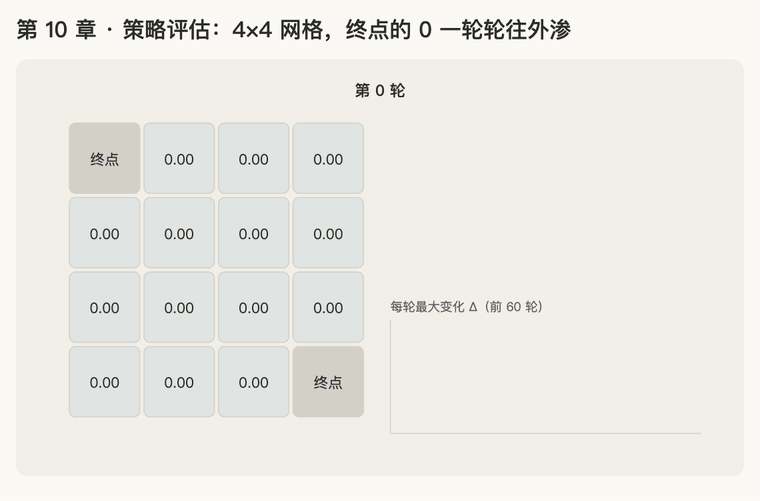
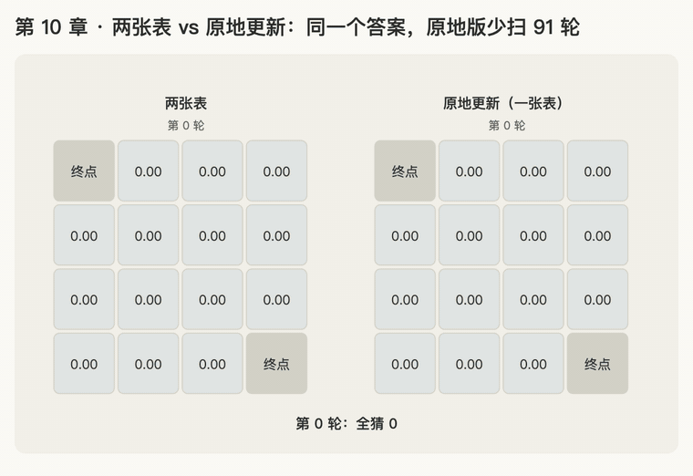

第 10 章 · 策略评估 policy evaluation：从 0 开始，反复套 Bellman 方程
本章回答：状态很多、方程组解不动时，怎么算出一份策略的价值？"反复代入"为什么会收敛到正确答案？
讲解日期：2026-11-13 · 上一章：第 9 章 最优价值 · 下一章：第 11 章 策略改进与策略迭代
对应原文：Sutton & Barto 第 4 章开头与 §4.1 Policy Evaluation（L5437–L5617，式 4.4、4.5，算法框 L5533，例 4.1 图 4.1）
本章缩写：DP = Dynamic Programming（动态 / 规划，第一步解释名字）；\(v_k\)：第 k 轮的估计，k 读"第几轮"；θ：希腊字母 theta（读"西塔"），停止的阈值。全部缩写见 附录 · 缩写与术语表
讲解
第一步：把方程当成"更新规则"：右边算出新值，覆盖左边（2026-11-13）
问题：第 8 章靠解 n 个方程算价值。网格有 25 个状态还行；状态一多（一张围棋棋盘的局面数比宇宙原子还多），方程组根本解不动。
办法：别去"解"方程，而是把它当成一条更新规则：先随便猜一组价值（比如全是 0），把它代进 Bellman 期望方程的右边，算出来的数当成新的左边；再代进去、再算……（式 4.5，L5487–L5516）：
和第 8 章的式 3.14 只差下标：右边用的是旧的 \(v_k\)，左边得到新的 \(v_{k+1}\)。
类比：传话估房价。 一开始大家都说"房价是 0"。第一轮，每家只看"今年租金"，估出一个数；第二轮，每家看"今年租金 + 打折的邻居家第一轮的估价"，又估出一个数……邻居的估价越来越准，你的也就越来越准。
这种算法叫动态规划 DP（第 4 章开头 L5358–L5366）：dynamic programming 是 Bellman 起的名字，"programming"在这里是"规划、排计划"的意思，不是写程序；思路是"大问题拆成相互依赖的小问题，反复利用小问题的答案"。DP 要求知道环境的 p。
一句话：策略评估 = 从猜测 \(v_0\) 出发，反复把旧价值代进 Bellman 方程右边、得到新价值。
第二步：4×4 网格，一轮一轮算给你看（2026-11-13）
例 4.1（L5558–L5617，图 4.1）：
- 4 × 4 的格子，左上角和右下角是终点（灰色），走到就结束；
- 每走一步奖励 −1（不管走到哪），撞墙原地不动、也扣 1；
- 策略：四个方向各 0.25，完全随机；不打折（γ = 1）。
\(v_\pi(s)\) 的意思是"从 s 出发随机乱走，平均要走多少步才能到终点"，再加个负号。
第 0 轮：全部猜 0。
第 1 轮：每个非终点格子，四个方向都是"−1 + 邻居的旧值 0"，平均还是 −1。终点永远是 0。
0.0 -1.0 -1.0 -1.0
-1.0 -1.0 -1.0 -1.0
-1.0 -1.0 -1.0 -1.0
-1.0 -1.0 -1.0 0.0
第 2 轮：看紧挨着左上终点的那格（第 1 行第 2 列）。它四个方向：
| 方向 | 到哪 | −1 + 那格第 1 轮的值 |
|---|---|---|
| 上 | 撞墙，留在原地 | −1 + (−1) = −2 |
| 下 | 第 2 行第 2 列 | −1 + (−1) = −2 |
| 右 | 第 1 行第 3 列 | −1 + (−1) = −2 |
| 左 | 终点 | −1 + 0 = −1 |
平均：\((-2 - 2 - 2 - 1) / 4 = -1.75\)。不挨着终点的格子，四个方向都是 −2，平均 −2。
0.0 -1.75 -2.0 -2.0
-1.75 -2.0 -2.0 -2.0
-2.0 -2.0 -2.0 -1.75
-2.0 -2.0 -1.75 0.0
（书上图 4.1 把 −1.75 印成 −1.7，是截掉了小数，不是四舍五入。）
第 3 轮、第 10 轮（代码算的）：
k = 3 k = 10
0.0 -2.4 -2.9 -3.0 0.0 -6.1 -8.4 -9.0
-2.4 -2.9 -3.0 -2.9 -6.1 -7.7 -8.4 -8.4
-2.9 -3.0 -2.9 -2.4 -8.4 -8.4 -7.7 -6.1
-3.0 -2.9 -2.4 0.0 -9.0 -8.4 -6.1 0.0
一句话：每一轮，每个格子 = 四个方向"−1 + 邻居上一轮的值"的平均；终点的 0 一轮一轮往外"渗"。
第三步：一直算下去，停在真正的价值上（2026-11-13）
继续算，数字越变越慢，最后不动了（代码算了 258 轮，直到每格变化都小于 0.000001）：
0 -14 -20 -22
-14 -18 -20 -20
-20 -20 -18 -14
-22 -20 -14 0
这就是图 4.1 最后一张（k = ∞）。读法：从右上角出发随机乱走，平均要走 22 步才到终点。
为什么一定会停在正确答案上（L5492–L5496）：
- 真正的 \(v_\pi\) 代进右边，算出来还是 \(v_\pi\)（第 8 章：它满足方程），所以它是这个过程的"不动点"：到了就不会再变；
- 每一轮，估计和真值的差距都会缩小（γ < 1 时至少缩成 γ 倍；这个例子 γ = 1，但每局一定会结束，也成立）；
- 所以不管从什么猜测出发，都会一轮轮逼近 \(v_\pi\)。
什么时候停（算法框 L5533–L5552）：记下这一轮所有格子里变化最大的那个数 Δ（希腊字母 delta，"变化量"），Δ 小于一个很小的阈值 θ 就停。
一句话：反复套方程，误差每轮都缩小，最后停在真正的 \(v_\pi\)；变化小于 θ 就收工。
第四步：两种写法：两张表 vs 一张表（原地更新）（2026-11-13）
两张表：第二步的做法：算第 k+1 轮时，右边全部用第 k 轮的旧值，新值写到另一张表里，一轮算完再整体替换。
一张表（原地更新 in place）（L5516–L5525）：只用一张表，算好一格马上覆盖；后面的格子算的时候，用到的邻居可能已经是这一轮的新值。
| 两张表 | 原地更新 | |
|---|---|---|
| 内存 | 两份 | 一份 |
| 用到的邻居 | 全是上一轮的 | 有的已经是新的 |
| 收敛速度 | 慢一点 | 通常更快（新信息传得快） |
| 结果 | 都收敛到同一个 \(v_\pi\) | 同左 |
类比：两张表像"全班交完卷再统一公布成绩"；原地更新像"谁算好了马上告诉同桌"。书里的算法框（L5533）写的就是原地版本，本章代码用的是两张表版本（方便打印每一轮）。
"评估"这个名字：这一章只回答"这份策略有多好"（书里也叫 prediction 预测问题，L5441–L5443），还没有改策略。下一章用算出的价值来改策略。
一句话：两张表全用旧值，原地更新算好就覆盖；两种都收敛到同一个答案，原地版通常更快。
动画演示：4×4 网格，终点的 0 一轮轮往外渗

可交互版：animations/l10-policy-eval.html（要能点按钮、拖滑块，需要用本地服务打开，见 animations/README.md"跑起来看"）。
怎么看：
- 每帧做一轮更新（第二步），格子颜色越深越负；
- 第 2 轮时高亮终点旁边那格，四个方向的 −2、−2、−2、−1 平均成 −1.75；
- 右下的曲线是每轮最大变化 Δ，越来越小（第三步）；
- 滑块跳到第 k 轮，对照图 4.1 的 k = 0、1、2、3、10、∞。
动画演示 2：两张表 vs 原地更新（第四步）

可交互版：animations/l10b-inplace.html（滑块跳到第 k 轮）
怎么看：
- 第 1 轮：左边两张表全是 −1，因为右边全用上一轮的 0；右边原地更新越往右下越负（−1.25、−1.5、−1.84…），因为它用到了这一轮刚算好的邻居。
- 同样的停止条件（Δ < 10⁻⁶），原地版 167 轮收敛，两张表 258 轮：新信息传得快。
- 收敛值一样：0、−14、−20、−22。两种写法只影响快慢，不影响答案。
练习与作答记录
题 1：第 2 轮里，第 2 行第 2 列那格（不挨着终点）为什么是 −2？列出它四个方向的值。
作答：（待作答）
题 2：最终价值里，左上终点正下方那格是 −14。用一句话说它的含义。
作答：（待作答）
题 3：如果第 0 轮不是全猜 0，而是全猜 −100，最后会收敛到不同的答案吗？用第三步的理由说明。
作答：（待作答）
口诀
方程当规则：旧值代右边，新值写左边；
一轮一轮套，终点的 0 往外渗；
误差每轮缩，最后停在真价值；
两张表稳当，一张表更快。
本章复习卡片
- R17（迭代策略评估 式 4.5：\(v_{k+1}\) 用 \(v_k\) 算；4×4 网格第 2 轮的 −1.75；为什么收敛）
附录 · 延伸阅读
留给以后深入学习用，不影响本章主线。★ 是建议先读的。L 行号指
materials/text/books/sutton-barto-RLbook2020.txt。
推荐阅读
| 读什么 | 读哪里 | 读它为了什么 |
|---|---|---|
| ★ Sutton & Barto §4.1 | L5437–L5557（式 4.4、4.5，算法框 L5533） | 本章原文：迭代策略评估、两张表 vs 原地 |
| ★ Sutton & Barto 例 4.1 | L5558–L5617，图 4.1（对照 PDF p.77） | 4×4 网格逐轮的数字（左列）；右列的贪心策略是第 11 章 |
| Sutton & Barto 第 4 章开头 | L5356–L5436 | 什么是 DP、为什么要知道 p |
| CS 285 第 7 讲 | lec-07.txt 开头（Value-Based RL） |
课程版：policy evaluation 在 actor-critic 和 Q-learning 里的位置 |
| Hands-on-RL 第 4 章 | chinese/Hands-on-RL/第4章-动态规划算法.ipynb |
中文：悬崖漫步上的策略评估代码 |
数学原理
- 压缩映射 contraction：记"把 v 代进右边"这个操作为 \(T_\pi\)。对任意两个估计 u、w，\(\max_s |T_\pi u(s) - T_\pi w(s)| \le \gamma \max_s |u(s) - w(s)|\)。所以每做一轮，离真值的距离至少乘 γ，\(v_k \to v_\pi\)。
- γ = 1 时：靠"每局一定会结束"（例 4.1 的随机策略总会走到终点）保证收敛。
- 原地更新：叫 Gauss–Seidel（高斯–赛德尔，两位数学家）式迭代；两张表叫 Jacobi（雅可比）式迭代。
- 计算量：每轮要对每个状态、每个动作、每个可能的 s' 算一次，约 \(|\mathcal S|^2 |\mathcal A|\)；比解方程组的 \(|\mathcal S|^3\) 便宜，而且可以只算需要的状态（第 12 章 asynchronous DP）。
公式清单
| 公式 | 意思 |
|---|---|
| \(v_{k+1}(s) = \sum_a \pi(a \mid s)\sum_{s', r} p\,[r + \gamma v_k(s')]\) | 迭代策略评估（式 4.5） |
| \(\Delta = \max_s \lvert v_{k+1}(s) - v_k(s)\rvert < \theta\) | 停止条件 |
| \(\lVert v_k - v_\pi \rVert_\infty \le \gamma^k \lVert v_0 - v_\pi \rVert_\infty\) | 误差每轮缩成 γ 倍 |
代码对照：把本章的数字用代码算一遍
代码在
cs285-deep-rl/solutions/chapter-code/ch10_policy_eval.py（网格定义在rl_envs.py的gridworld_4x4()），测试tests/test_ch10_16.py。
同一章的 Jupyter notebook：cs285-deep-rl/solutions/chapter-code/notebooks/ch10_policy_eval.ipynb（讲解和代码放在一起，一格一格边读边跑；代码都写在格子里，Colab 也能直接打开）。
bash cd cs285-deep-rl/solutions/chapter-code uv run python ch10_policy_eval.py
| 讲义 | 代码 | 跑出来 |
|---|---|---|
| 一轮更新（两张表） | sweep(P, pi, v, gamma) |
新的一整张表 |
| 第 0、1、2、3、10 轮 | policy_evaluation(..., history=True) 的 hist[k] |
图 4.1 左列 |
| 收敛 | 258 轮 | 0、−14、−20、−22 … |
关键几行：
new = np.array([sum(pa * q_from_v(P, v, gamma, s, a) for a, pa in pi[s].items()) for s in P])
if np.max(np.abs(new - v)) < theta: # Δ < θ 就停
return new
代码里才看得到的：终点在代码里写成"做什么都留在原地、奖励 0、done=True"，q_from_v 遇到 done 就不加 \(\gamma v(s')\)，所以终点的价值一直是 0。把 sweep 改成"算一格马上写回 v"就是原地版本，可以自己试试它要几轮收敛。
自己改一改（不影响练习答案）：
policy_evaluation(..., theta=1e-2, history=True)：88 轮就停，价值是 0、−13.9、−19.84、−21.83；theta=1e-6要 257 轮，才到 −14、−20、−22。θ 决定"差多少算收敛"。- 把 γ 从 1 改成 0.9：88 轮收敛，第一行变成 0、−5.28、−7.13、−7.65。打折以后"远处的 −1"变轻了，所以数小得多。